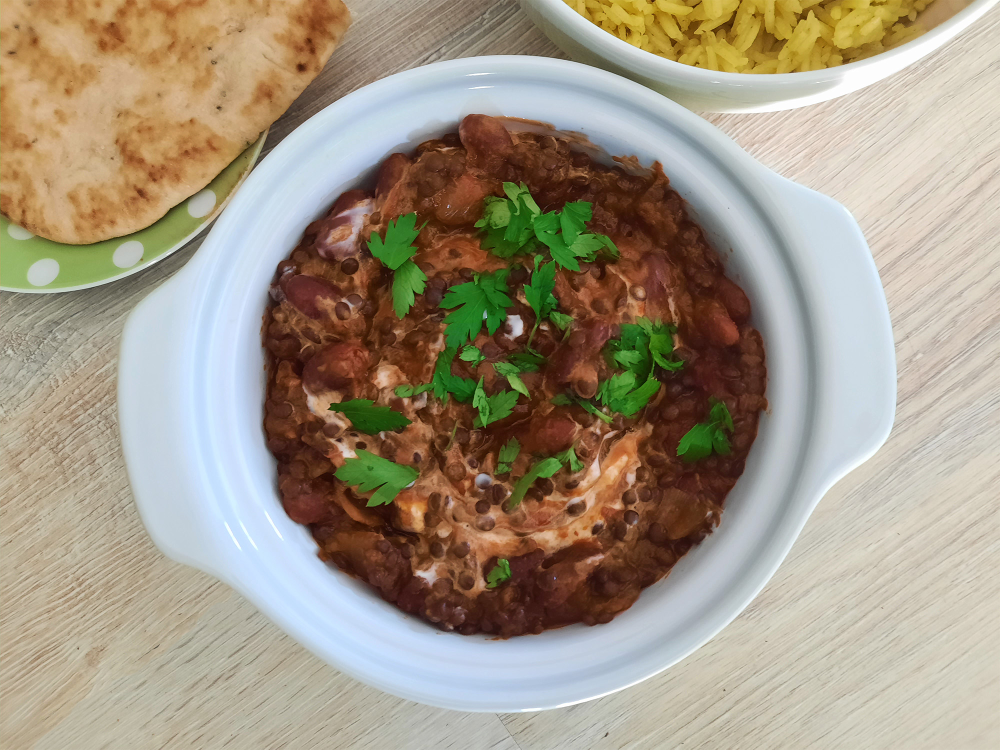

dahl makhni met pilavrijst
Lekker met naanbrood.

Bereidingsduur: 50 minuten
Aantal personen: 3
Ingrediënten:
200 gram zwarte linzen
1 ui
250 gram kidneybonen
6 teentjes knoflook
1 theelepel gember
140 gram tomatenpuree
0,25 theelepel chilipoeder
0,25 theelepel gerookt paprikapoeder
1 theelepel garam masala
0,5 theelepel suiker
naar smaak zure room
0,5 theelepel komijnzaad
0,75 theelepel kardemom
0,75 theelepel kaneel
0,25 theelepel nootmuskaat
enkele takjes peterselie
naar smaak naanbrood
250 gram basmatirijst
2 theelepels kerrie
0,5 theelepel komijn
1 blokje groentebouillon
200 gram zwarte linzen
1 ui
250 gram kidneybonen
6 teentjes knoflook
1 theelepel gember
140 gram tomatenpuree
0,25 theelepel chilipoeder
0,25 theelepel gerookt paprikapoeder
1 theelepel garam masala
0,5 theelepel suiker
naar smaak zure room
0,5 theelepel komijnzaad
0,75 theelepel kardemom
0,75 theelepel kaneel
0,25 theelepel nootmuskaat
enkele takjes peterselie
naar smaak naanbrood
250 gram basmatirijst
2 theelepels kerrie
0,5 theelepel komijn
1 blokje groentebouillon
Instructies:
1. Week de zwarte linzen en kook deze daarna 20 minuten. Snijd de ui, knoflook en gember in kleine stukjes.
2. Verhit olie in een braadpan en bak hierin het komijnzaad tot deze verkleurt. Voeg dan de ui, knoflook en gember toe tot deze wat bruinig zijn. Voeg de kidneybonen toe en bak mee. Voeg nu de tomatenpuree, suiker, 0,5 tl kardemom, 0,5 tl kaneel, 0,25 tl nootmuskaat, chilipoeder en gerookt paprikapoeder toe en roer goed door.
3. Wanneer de linzen zacht zijn, voeg je deze samen met de garam masala toe aan de braadpan. Roer goed door en voeg wat 2 kopjes water toe en laat 20 minuten zonder deksel op het fornuis koken tot de dal goed zacht is. Snijd de peterselie fijn en maak het naanbrood klaar.
4. Tijd om de pilavrijst te maken. Verhit olie in een andere pan. Voeg rijst en 2 tl kerrie, 0,5 tl komijn, 0,25 tl kardemom en 0,25 tl kaneel toe. Roer goed en voeg het bouillonblokje en 800 milliliter kokend water toe. Roer en laat 10 minuutjes koken met deksel op de pan. Giet af en meng de helft van de fijngesneden peterselie erdoorheen. De rijst is klaar.
5. Voeg wat zure room toe aan de dahl en roer goed door. Garneer met de andere helft van de peterselie en serveer met pilavrijst en naanbrood.
1. Week de zwarte linzen en kook deze daarna 20 minuten. Snijd de ui, knoflook en gember in kleine stukjes.
2. Verhit olie in een braadpan en bak hierin het komijnzaad tot deze verkleurt. Voeg dan de ui, knoflook en gember toe tot deze wat bruinig zijn. Voeg de kidneybonen toe en bak mee. Voeg nu de tomatenpuree, suiker, 0,5 tl kardemom, 0,5 tl kaneel, 0,25 tl nootmuskaat, chilipoeder en gerookt paprikapoeder toe en roer goed door.
3. Wanneer de linzen zacht zijn, voeg je deze samen met de garam masala toe aan de braadpan. Roer goed door en voeg wat 2 kopjes water toe en laat 20 minuten zonder deksel op het fornuis koken tot de dal goed zacht is. Snijd de peterselie fijn en maak het naanbrood klaar.
4. Tijd om de pilavrijst te maken. Verhit olie in een andere pan. Voeg rijst en 2 tl kerrie, 0,5 tl komijn, 0,25 tl kardemom en 0,25 tl kaneel toe. Roer goed en voeg het bouillonblokje en 800 milliliter kokend water toe. Roer en laat 10 minuutjes koken met deksel op de pan. Giet af en meng de helft van de fijngesneden peterselie erdoorheen. De rijst is klaar.
5. Voeg wat zure room toe aan de dahl en roer goed door. Garneer met de andere helft van de peterselie en serveer met pilavrijst en naanbrood.